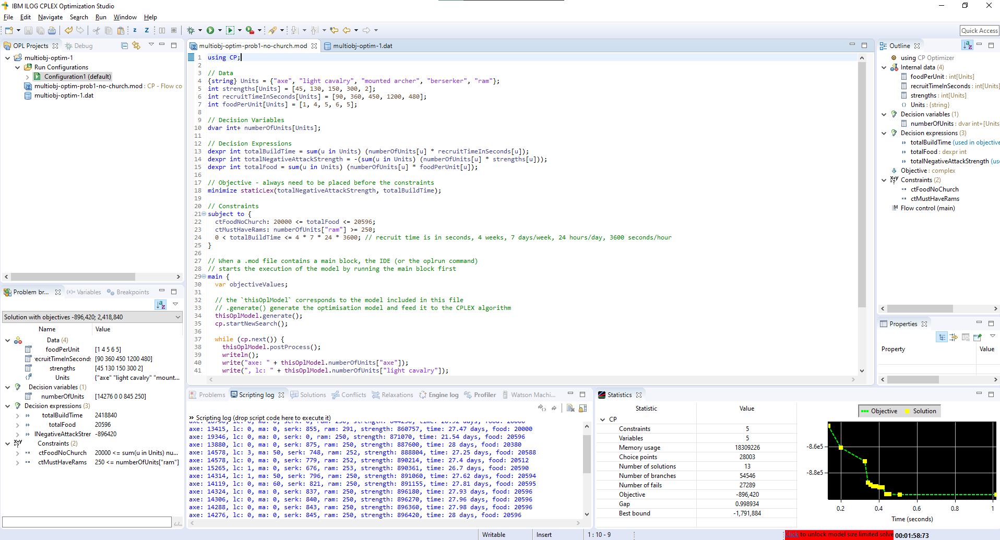

Multi-objective Optimisation with IBM ILOG CPLEX - Part 1

Table of Contents
Eons ago (2015), I played this online game called Tribal Wars 2 and created a report that summarised the best troops combination to build. Recently, however, the game maker Innogames wiped their online forums to its pre-historic ages, which happened to include my report on army sizes. Back then, I used MATLAB Optimization Toolbox. Now I’m going to give IBM ILOG CPLEX a try and see how it goes.
In this first post, I’m going to:
- Provide an overview of IBM ILOG CPLEX
- Explain the domain problem
- Write a few models in OPL (overview in post), script in ILOG script and list the model results
The code for this post is hosted at https://github.com/rampadc/multi-obj-optim-prob1.
Part 2 will touch on adding customisations into the model with Python. If that’s not too long, I’ll go ahead and deploy that to IBM Cloud somehow as well. Otherwise, that will be a separate post.
What is IBM ILOG CPLEX?⌗
IBM ILOG CPLEX consists of a modeling language, two optimisation engines to solve the models, and an IDE to test and debug the models.
- The modeling language is OPL (optimisation programming language)
- The IDE included is called CPLEX Optimization Studio
- The two engines are:
- CPLEX Optimizer Engine: used to find solutions to models that requires maths programming
- CP Optimizer Engine: used to find solutions to models that requires constraint programming
It comes with a limited trial version at IBM ILOG CPLEX website, which I’m going to use here. The trial installer gives you all of the components above, but limits you to 1000 variables and 1000 constraints. More than good enough for my miniscule optimisation problem.
After optimising a model, you can find a statistics tab in the bottom panel, and it’s pretty cool to look at. The gap number refers to the percentage between the best possible solution and the best found integer solution. CPLEX works to minimise this gap value over time.

The code in the screenshot is of the third model in this post.
What does OPL (Optimisation Programming Language) look like?⌗
The following is the sample code listed in OPL’s orientation guide. It is contained in a file called production.mod.
{string} Products = ...;
{string} Resources = ...;
float Consumption[Products][Resources] = ...;
float Capacity[Resources] = ...;
float Demand[Products] = ...;
float InsideCost[Products] = ...;
float OutsideCost[Products] = ...;
dvar float+ Inside[Products];
dvar float+ Outside[Products];
minimize
sum( p in Products )
( InsideCost[p] * Inside[p] + OutsideCost[p] * Outside[p] );
subject to {
forall( r in Resources )
ctCapacity:
sum( p in Products )
Consumption[p][r] * Inside[p] <= Capacity[r];
forall(p in Products)
ctDemand:
Inside[p] + Outside[p] >= Demand[p];
}
- The
{string}on line 1 signifies a set of strings declaration. The 3 dots to the right of this signifies the data is read from an external data file, which can be a data file, a spreadsheet or a database. Pretty cool! dvar float+signifies a decision variable,float+signifies a real non-negative number.- The goal of this code is to
minimizethe total cost with constraints set in the lastsubject toblock.
The minimize section can be re-written to support dexpr. dexpr lets you create reusable decision expression to make the model more readable, like so:
dexpr float TotalCost = sum( p in Products ) ( InsideCost[p] * Inside[p] + OutsideCost[p] * Outside[p] );
minimize TotalCost;
A data file production.dat lives in the same project with the following contents:
Products = { "rings", "earrings" }; //index sets for
Resources = { "gold", "diamonds" }; //products and resources
Consumption = [ [3.0, 1.0], [2.0, 2.0] ];
Capacity = [ 130, 180 ];
Demand = [ 100, 150 ];
InsideCost = [ 250, 200 ];
OutsideCost = [ 260, 270 ];
Some notable syntax are sets are defined with the {} curly braces while arrays are defined with the [] square brackets.
Additionally, OPL has a tuple type. Tuple types can only contain certain types (primitives, tuples, arrays with primitive types, sets of primitive types). Data contents are defined with the <> less-than and greater-than signs in code, and in the data file, follows a certain format.
If a model has a tuple defined as:
tuple point
{
int x;
int y;
}
point p1=...;
point p2=...;
Then in the .dat file, the tuple data is defined as
p1=#<y:1, x:2>#;
p2=<2, 1>;
OPL’s reference manual is a good start to learn about OPL.
Modeling the game⌗
Problem⌗
The win condition of Tribal Wars 2 is for a tribe (a group of players) to control 80% of the entire world’s villages. To achieve this, each player needs to conquer as many villages as possible by attacking other players, reducing their troop count, and eventually taking over the opposition’s villages.
To build large armies to conquer other villages, each player needs to continuously recruit troops in their respective villages.
Each village can have a maximum provision of 24_000 units. Buildings take up provisions, upgrades to buildings take up provisions. For example, the headquarter’s upgrade costs are listed in the HQ’s overview table. Different units also take up different provisions. Upgrades to the barracks use up provisions but also make recruiting troops faster.
Similarly, each village can have a maximum allotment of resources (wood, clay, iron). The maximum capacity of each type is dependent on the warehouse’s level. Each resource type can be replenished either by the village itself producing those resources or loot from successful attacks from troops in that village on another village.
There are three problems we aim to solve:
- Maximise the total offensive strength of the army while minimising the time taken to build an army.
- Maximise the total offensive strength of the army while minimising the time taken to build an army, with consideration to resource distribution.
- Maximise the number of wall levels reduced (described below) for a successful attack, while minimising the time taken to build the army.
This post addresses the first problem.
Known trends⌗
From my MATLAB report in 2015, the most effective army is built around 1778 light cavalry, 1652 mounted archer, 250 rams and 771 berserkers, taking a total of 16.7 days to recruit. This has a very high iron cost. On the other hand, a slower but more resource-effective build is around 2217 light cavalry, 2176 mounted archer and 250 rams.
The 250 rams is an assumed number of rams taken to reduce a level 20 wall to rubbles for a successful attacks. This isn’t a hard and fast number, however. More rams results in more wall levels deduction. In the event of a failed attack, i.e. all attacker troops are lost, greater number of rams reduces more wall levels.
Constraints⌗
Provision (or food) is the first constraint. For this problem, I assume that buildings are built to the following configurations:
| Building | Level | Provisions |
|---|---|---|
| Headquarter | 25 | 212 |
| Wood | 30 | 322 |
| Clay | 30 | 438 |
| Iron | 30 | 940 |
| Farm | 30 | 0 |
| Warehouse | 30 | 0 |
| Chapel | 1 | 0 |
| Rally point | 1 | 1 |
| Barracks | 25 | 556 |
| Statue | 5 | 0 |
| Wall | 20 | 99 |
| Hospital | 10 | 74 |
| Market | 20 | 395 |
| Tavern | 15 | 276 |
| Academy | 1 | 80 |
| Hall of Order | 1 | 11 |
| Total | 3404 |
This configuration lets me build nobles and beserkers.
If a village is built with a church, the provisions cost is increased as below:
| Church Level | Total Provisions |
|---|---|
| 1 | 8404 |
| 2 | 6150 |
| 3 | 7667 |
For a church level 3 village, it doesn’t make sense in-game to make this an offensive village. Therefore, only a level 1 church-village is considered. With a cap of 24_000 provisions per village, this gives us two provision constraints:
ctFoodNoChurch:<= 20596ctFoodChurch1:<= 15596
ct stands for constraint. I see this as a convention in IBM ILOG CPLEX’s documentation thus I’m using it here as well.
“Just get it to work” model (CP optimizer)⌗
In this model, I’m writing every variable out as is. I wonder if there are any performance impacts with no matrix operations involved like MATLAB would have.
Multi-objectives or multi-criteria optimisation requires the use of staticLex() using the CP Optimizer engine. In this code, it prioritises the attack strength first and then the build time. Since OPL can only optimise in one direction, i.e. minimize or maximize, I’m negating the total attack strength, so both build time and “negated attack strength” can be minimised.
It’s pretty cool that ILOG scripting (in main block) is essentially ES5 JavaScript.
// CP Optimizer
using CP;
// Data
int axeStrength = 45;
int lcStrength = 130;
int maStrength = 150;
int serkStrength = 300;
int secRecAxe = 90;
int secRecLC = 360;
int secRecMA = 450;
int secRecSerk = 1200;
int secRecRam = 480;
int foodAxe = 1;
int foodLC = 4;
int foodMA = 5;
int foodSerk = 6;
int foodRam = 5;
// Decision Variables
dvar int+ numAxe;
dvar int+ numLC;
dvar int+ numMA;
dvar int+ numSerk;
// Decision Expressions
dexpr int totalBuildTime = numAxe*secRecAxe + numLC*secRecLC + numMA*secRecMA + numSerk*secRecSerk + 250*secRecRam;
dexpr int totalNegativeAttackStrength = -(numAxe*axeStrength + numLC*lcStrength + numMA*maStrength + numSerk*serkStrength);
// Objective - always need to be placed before the constraints
minimize staticLex(totalNegativeAttackStrength, totalBuildTime);
// Constraints
subject to {
(numAxe*foodAxe + numLC*foodLC + numMA*foodMA + numSerk*foodSerk + 250*foodRam) <= 20596;
totalBuildTime > 0;
}
// When a .mod file contains a main block, the IDE (or the oplrun command)
// starts the execution of the model by running the main block first
main {
// the `thisOplModel` corresponds to the model included in this file
// .generate() generate the optimisation model and feed it to the CPLEX algorithm
thisOplModel.generate();
cp.startNewSearch();
while (cp.next()) {
thisOplModel.postProcess();
writeln("axe: " + thisOplModel.numAxe +
", lc: " + thisOplModel.numLC +
", ma: " + thisOplModel.numMA +
", ram: " + 250 +
", serk: " + thisOplModel.numSerk +
", strength: " + (-thisOplModel.totalNegativeAttackStrength) +
", time: " + Math.round(thisOplModel.totalBuildTime / 3600 / 24 *100)/100 + " days");
}
cp.endSearch();
}
The model above ran for ~7 seconds with the following results:
axe: 0, lc: 0, ma: 0, ram: 250, serk: 0, strength: 0, time: 1.39 days
axe: 433, lc: 291, ma: 391, ram: 250, serk: 2464, strength: 855165, time: 39.31 days
axe: 19346, lc: 0, ma: 0, ram: 250, serk: 0, strength: 870570, time: 21.54 days
axe: 7345, lc: 408, ma: 19, ram: 250, serk: 1636, strength: 877215, time: 33.56 days
axe: 66, lc: 204, ma: 198, ram: 250, serk: 2912, strength: 932790, time: 43.78 days
axe: 3819, lc: 0, ma: 17, ram: 250, serk: 2528, strength: 932805, time: 40.57 days
axe: 3461, lc: 7, ma: 0, ram: 250, serk: 2634, strength: 946855, time: 41.61 days
axe: 617, lc: 0, ma: 0, ram: 250, serk: 3064, strength: 946965, time: 44.59 days
axe: 37, lc: 45, ma: 0, ram: 250, serk: 3188, strength: 963915, time: 45.89 days
axe: 0, lc: 0, ma: 0, ram: 250, serk: 3214, strength: 964200, time: 46.03 days
axe: 139, lc: 3, ma: 5, ram: 250, serk: 3191, strength: 964695, time: 45.89 days
axe: 2, lc: 3, ma: 0, ram: 250, serk: 3221, strength: 966780, time: 46.14 days
axe: 104, lc: 0, ma: 0, ram: 250, serk: 3207, strength: 966780, time: 46.04 days
axe: 0, lc: 0, ma: 0, ram: 250, serk: 3223, strength: 966900, time: 46.15 days
axe: 3, lc: 0, ma: 0, ram: 250, serk: 3223, strength: 967035, time: 46.16 days
axe: 0, lc: 0, ma: 0, ram: 250, serk: 3224, strength: 967200, time: 46.17 days
axe: 4, lc: 1, ma: 0, ram: 250, serk: 3223, strength: 967210, time: 46.16 days
axe: 8, lc: 0, ma: 0, ram: 250, serk: 3223, strength: 967260, time: 46.16 days
axe: 2, lc: 0, ma: 0, ram: 250, serk: 3224, strength: 967290, time: 46.17 days
The optimal compromise seems to be 19346 axes, 250 rams would take 21.54 days with strength 870570. But I know from the MATLAB optimisation solution in 2015 that mixing in light cavalry (LC) and mounted archer (MA) would give a lower recruitment time. The difference here is back then, I used varying weights between the two priorties.
“Refactored & Looking pretty” model (CP optimizer)⌗
Let’s refactor the data code to use arrays and see if we get any performance improvements. It’s interesting that the numberOfUnits array in OPL turned into a Javascript object in the ILOG script main block.
using CP;
// Data
{string} Units = {"axe", "light cavalry", "mounted archer", "berserker"};
int strengths[Units] = [45, 130, 150, 300];
int recruitTimeInSeconds[Units] = [90, 360, 450, 1200];
int foodPerUnit[Units] = [1, 4, 5, 6];
// Decision Variables
dvar int+ numberOfUnits[Units];
// Decision Expressions
dexpr int totalBuildTime = sum(u in Units) (numberOfUnits[u] * recruitTimeInSeconds[u]) + 250 * 480;
dexpr int totalNegativeAttackStrength = -(sum(u in Units) (numberOfUnits[u] * strengths[u]));
// Objective - always need to be placed before the constraints
minimize staticLex(totalNegativeAttackStrength, totalBuildTime);
// Constraints
subject to {
ctFoodNoChurch: sum(u in Units) (numberOfUnits[u] * foodPerUnit[u]) + 1250 <= 20596;
totalBuildTime > 0;
}
// When a .mod file contains a main block, the IDE (or the oplrun command)
// starts the execution of the model by running the main block first
main {
// the `thisOplModel` corresponds to the model included in this file
// .generate() generate the optimisation model and feed it to the CPLEX algorithm
thisOplModel.generate();
cp.startNewSearch();
while (cp.next()) {
thisOplModel.postProcess();
writeln();
write("axe: " + thisOplModel.numberOfUnits["axe"]);
write(", lc: " + thisOplModel.numberOfUnits["light cavalry"]);
write(", ma: " + thisOplModel.numberOfUnits["mounted archer"]);
write(", serk: " + thisOplModel.numberOfUnits["berserker"]);
write(", ram: " + 250);
write(", strength: " + (-thisOplModel.totalNegativeAttackStrength));
write(", time: " + Math.round(thisOplModel.totalBuildTime / 3600 / 24 *100)/100 + " days");
}
cp.endSearch();
}
The results are exactly the same and it only took 6.88 seconds. There is a performance improvement!
axe: 0, lc: 0, ma: 0, serk: 0, ram: 250, strength: 0, time: 1.39 days
axe: 433, lc: 291, ma: 391, serk: 2464, ram: 250, strength: 855165, time: 39.31 days
axe: 19346, lc: 0, ma: 0, serk: 0, ram: 250, strength: 870570, time: 21.54 days
axe: 7345, lc: 408, ma: 19, serk: 1636, ram: 250, strength: 877215, time: 33.56 days
axe: 66, lc: 204, ma: 198, serk: 2912, ram: 250, strength: 932790, time: 43.78 days
axe: 3819, lc: 0, ma: 17, serk: 2528, ram: 250, strength: 932805, time: 40.57 days
axe: 3461, lc: 7, ma: 0, serk: 2634, ram: 250, strength: 946855, time: 41.61 days
axe: 617, lc: 0, ma: 0, serk: 3064, ram: 250, strength: 946965, time: 44.59 days
axe: 37, lc: 45, ma: 0, serk: 3188, ram: 250, strength: 963915, time: 45.89 days
axe: 0, lc: 0, ma: 0, serk: 3214, ram: 250, strength: 964200, time: 46.03 days
axe: 139, lc: 3, ma: 5, serk: 3191, ram: 250, strength: 964695, time: 45.89 days
axe: 2, lc: 3, ma: 0, serk: 3221, ram: 250, strength: 966780, time: 46.14 days
axe: 104, lc: 0, ma: 0, serk: 3207, ram: 250, strength: 966780, time: 46.04 days
axe: 0, lc: 0, ma: 0, serk: 3223, ram: 250, strength: 966900, time: 46.15 days
axe: 3, lc: 0, ma: 0, serk: 3223, ram: 250, strength: 967035, time: 46.16 days
axe: 0, lc: 0, ma: 0, serk: 3224, ram: 250, strength: 967200, time: 46.17 days
axe: 4, lc: 1, ma: 0, serk: 3223, ram: 250, strength: 967210, time: 46.16 days
axe: 8, lc: 0, ma: 0, serk: 3223, ram: 250, strength: 967260, time: 46.16 days
axe: 2, lc: 0, ma: 0, serk: 3224, ram: 250, strength: 967290, time: 46.17 days
“Let the optimiser do more with more constraints” model (CP optimizer)⌗
Before moving onto adding weights, let’s generalise and try having the optimiser determines how many rams we should build for maximum attack strength. For this, I’m adding a constraint that the army must have at least 250 rams since we’re assuming the defender will have a level 20 wall.
Furthermore, I realised at this point I forgot to add in a minimum provision (food) constraint, which explains why we’re getting the 1.39 days value. I’m going to throw in an arbitary minimum threshold.
Lastly, 45 days is a really long time. Ideally, we want to have a fresh new army in less than a month. OPL supports lowerbound <= X <= upperbound syntax. I’m going to further constraint the totalBuildTime to be less than 4 weeks.
using CP;
// Data
{string} Units = {"axe", "light cavalry", "mounted archer", "berserker", "ram"};
int strengths[Units] = [45, 130, 150, 300, 2];
int recruitTimeInSeconds[Units] = [90, 360, 450, 1200, 480];
int foodPerUnit[Units] = [1, 4, 5, 6, 5];
// Decision Variables
dvar int+ numberOfUnits[Units];
// Decision Expressions
dexpr int totalBuildTime = sum(u in Units) (numberOfUnits[u] * recruitTimeInSeconds[u]);
dexpr int totalNegativeAttackStrength = -(sum(u in Units) (numberOfUnits[u] * strengths[u]));
dexpr int totalFood = sum(u in Units) (numberOfUnits[u] * foodPerUnit[u]);
// Objective - always need to be placed before the constraints
minimize staticLex(totalNegativeAttackStrength, totalBuildTime);
// Constraints
subject to {
ctFoodNoChurch: 20000 <= totalFood <= 20596;
ctMustHaveRams: numberOfUnits["ram"] >= 250;
0 < totalBuildTime <= 4 * 7 * 24 * 3600; // recruit time is in seconds, 4 weeks, 7 days/week, 24 hours/day, 3600 seconds/hour
}
// When a .mod file contains a main block, the IDE (or the oplrun command)
// starts the execution of the model by running the main block first
main {
// the `thisOplModel` corresponds to the model included in this file
// .generate() generate the optimisation model and feed it to the CPLEX algorithm
thisOplModel.generate();
cp.startNewSearch();
while (cp.next()) {
thisOplModel.postProcess();
writeln();
write("axe: " + thisOplModel.numberOfUnits["axe"]);
write(", lc: " + thisOplModel.numberOfUnits["light cavalry"]);
write(", ma: " + thisOplModel.numberOfUnits["mounted archer"]);
write(", serk: " + thisOplModel.numberOfUnits["berserker"]);
write(", ram: " + thisOplModel.numberOfUnits["ram"]);
write(", strength: " + (-thisOplModel.totalNegativeAttackStrength));
write(", time: " + Math.round(thisOplModel.totalBuildTime / 3600 / 24 *100)/100 + " days");
write(", food: " + thisOplModel.totalFood);
}
cp.endSearch();
}
Results after 1 minute and 58 seconds:
axe: 18750, lc: 0, ma: 0, serk: 0, ram: 250, strength: 844250, time: 20.92 days, food: 20000
axe: 13415, lc: 0, ma: 0, serk: 855, ram: 291, strength: 860757, time: 27.47 days, food: 20000
axe: 19346, lc: 0, ma: 0, serk: 0, ram: 250, strength: 871070, time: 21.54 days, food: 20596
axe: 13880, lc: 0, ma: 0, serk: 875, ram: 250, strength: 887600, time: 28 days, food: 20380
axe: 14578, lc: 3, ma: 50, serk: 748, ram: 252, strength: 888804, time: 27.25 days, food: 20588
axe: 14578, lc: 0, ma: 0, serk: 779, ram: 252, strength: 890214, time: 27.4 days, food: 20512
axe: 15265, lc: 1, ma: 0, serk: 676, ram: 253, strength: 890361, time: 26.7 days, food: 20590
axe: 14314, lc: 1, ma: 50, serk: 796, ram: 250, strength: 891060, time: 27.62 days, food: 20594
axe: 14119, lc: 0, ma: 60, serk: 821, ram: 250, strength: 891155, time: 27.81 days, food: 20595
axe: 14324, lc: 0, ma: 0, serk: 837, ram: 250, strength: 896180, time: 27.93 days, food: 20596
axe: 14306, lc: 0, ma: 0, serk: 840, ram: 250, strength: 896270, time: 27.96 days, food: 20596
axe: 14288, lc: 0, ma: 0, serk: 843, ram: 250, strength: 896360, time: 27.98 days, food: 20596
axe: 14276, lc: 0, ma: 0, serk: 845, ram: 250, strength: 896420, time: 28 days, food: 20596
“Much faster” model with weights (CPLEX optimizer)⌗
To add weights, staticLexFull() needs to be used. Adding weights is also known as blended objectives. Thus far, what I have done refers to a lexicographic objective, where priorties are assigned to each objective.
It’s strange that the list of examples for multi-objective optimisation in IBM documentation doesn’t include OPL, while they do have staticLexFull() usage in the example code that comes with the studio installation.
staticLexFull() accepts 5 parameters:
goals: an array of expression of variablesweights: array of integers that defines the weight of each goalpriorities: array of integers that define the order of optimisations to be solvedabstol: an array of floats that define absolute tolerances. The absolute tolerance, abstol, is an amount by which the returned solution may deviate from the optimal value for this objective in absolute terms.reltol: an array of floats to define relative tolerances. The relative tolerance, relTol, is an amount by which the returned solution may deviates from the optimal value for this objective in relative terms.
The two attributes
AbsTolandRelTolrelax the requirement that in each step the objective is optimized among the solutions that are optimal to the previous optimization problems. More precisely, for each objective AbsTol and RelTol specify, in absolute and relative terms, the maximum deviations allowed from the optimal value of that objective.
Absolute and relative tolerances documentation cannot be more vague about what values should be provided. They have a default value of 0 though.
Using staticLexFull() also means that we’re now using CPLEX Optimizer instead of CP Optimizer to do the optimisation. Therefore, using CP; will be removed, and the code inside main {} needs to be re-written.
After generate(), the OPL model becomes immutable. To vary the weights, I’d split the main code into a separate file and reload the model.
staticLexFull.mod
// Data
{string} Units = {"axe", "light cavalry", "mounted archer", "berserker", "ram"};
int strengths[Units] = [45, 130, 150, 300, 2];
int recruitTimeInSeconds[Units] = [90, 360, 450, 1200, 480];
int foodPerUnit[Units] = [1, 4, 5, 6, 5];
// Decision Variables
dvar int+ numberOfUnits[Units];
// Decision Expressions
dexpr int totalBuildTime = sum(u in Units) (numberOfUnits[u] * recruitTimeInSeconds[u]);
dexpr int totalNegativeAttackStrength = -(sum(u in Units) (numberOfUnits[u] * strengths[u]));
dexpr int totalFood = sum(u in Units) (numberOfUnits[u] * foodPerUnit[u]);
dexpr int goals[i in 1..2] = (i == 1) ? totalNegativeAttackStrength : totalBuildTime;
int priorities[i in 1..2] = 1;
// Externalise weights for edits
float weights[1..2] = ...; // weight[1]: strength, weight[2]: time
// Assigning abstol and reltol to 0 doesn't seem to have an impact on the solution
float abstol[i in 1..2] = 0;
float reltol[i in 1..2] = 0;
// Objective - always need to be placed before the constraints
minimize staticLexFull(goals, weights, priorities, abstol, reltol);
// Constraints
subject to {
ctFoodNoChurch: 20580 <= totalFood <= 20596;
ctMustHaveRams: numberOfUnits["ram"] >= 250;
0 < totalBuildTime <= 4 * 7 * 24 * 3600; // recruit time is in seconds, 4 weeks, 7 days/week, 24 hours/day, 3600 seconds/hour
}
staticLexFull_data.dat
weights = [1, 0];
staticLexFull_main.mod
main {
var source = new IloOplModelSource("./staticLexFull.mod");
var modelDefinition = new IloOplModelDefinition(source);
var extData = new IloOplDataSource("./staticLexFull_data.dat");
var cplex = new IloCplex();
var opl = new IloOplModel(modelDefinition, cplex);
opl.addDataSource(extData);
// Create a model for optimisation
opl.generate();
var weightStep = 0.1;
var strengthWeight = opl.weights[1];
while (strengthWeight >= 0) {
if (cplex.solve()) {
writeln();
write("axe: " + opl.numberOfUnits["axe"]);
write(", lc: " + opl.numberOfUnits["light cavalry"]);
write(", ma: " + opl.numberOfUnits["mounted archer"]);
write(", serk: " + opl.numberOfUnits["berserker"]);
write(", ram: " + opl.numberOfUnits["ram"]);
write(", strength: " + (-opl.totalNegativeAttackStrength));
write(", time: " + Math.round(opl.totalBuildTime / 3600 / 24 *100)/100 + " days");
write(", food: " + opl.totalFood);
}
// Prepare for next iteration
// Decrease strength weight by `weightStep`
// Increase time weight by `weightStep` or (1 - strengthWeight)
strengthWeight = opl.weights[1];
strengthWeight -= weightStep;
// create new external data to load in as weights
var newData = opl.dataElements;
newData.weights[1] = strengthWeight;
newData.weights[2] = 1 - strengthWeight;
// Load the new data structure into a newly created model
var opl = new IloOplModel(modelDefinition, cplex);
opl.addDataSource(newData);
opl.generate();
}
opl.end();
extData.end();
modelDefinition.end();
cplex.end();
source.end();
}
Results after 0.21 seconds:
axe: 19330, lc: 0, ma: 0, serk: 0, ram: 250, strength: 870350, time: 21.52 days, food: 20580
axe: 19346, lc: 0, ma: 0, serk: 0, ram: 250, strength: 871070, time: 21.54 days, food: 20596
axe: 14276, lc: 0, ma: 0, serk: 845, ram: 250, strength: 896420, time: 28 days, food: 20596
The benefit of using staticLexFull despite the massive hurdle of hunting for documentation is that it runs super fast: 0.21 seconds compared to nearly 2 minutes on the CP optimizer with sufficiently low weight step size of 0.1.
Next step: Adding game knowledge with DOcplex Python library⌗
Our results thus far have a lot of axemen in them. As a quick summary,
- Spearmen counters light cavalry (LC)
- Swordmen counters axemen (axe)
- Archer counters mounted archers (MA)
- Trebuchets (treb) counters rams
- Heavy cavalry (HC) does everything, super expensive, built to quickly support other players
Early game, smaller players tend to build lots of swordmen, which defends well against axemen. Sometimes, you want to focus on building mounted archers over other units as players don’t tend to have archers. Adding LC and MA lowers the strength but MATLAB told me in 2015 there’s an even faster recruitment time result.
One line of code that bugged me quite a lot so far is the goals[] definition:
dexpr int goals[i in 1..2] = (i == 1) ? totalNegativeAttackStrength : totalBuildTime;
Imagine adding more than 2 goals and this line is going to expand into an ugly ternary. It feels like the CPLEX team decides to add a new feature but doesn’t quite know how to define the OPL syntax.
On the other hand, looking at the multi-objective nurse optimisation example in Python, starting from line 450, it’s positively clean! Here, add_kpi is equivalent to adding a goal or a decision expression.
def setup_objective(model):
model.add_kpi(model.total_salary_cost, "Total salary cost")
model.add_kpi(model.total_number_of_assignments, "Total number of assignments")
model.add_kpi(model.average_nurse_work_time, "average work time")
total_over_average_worktime = model.sum(model.nurse_over_average_time_vars[n] for n in model.nurses)
total_under_average_worktime = model.sum(model.nurse_under_average_time_vars[n] for n in model.nurses)
model.add_kpi(total_over_average_worktime, "Total over-average worktime")
model.add_kpi(total_under_average_worktime, "Total under-average worktime")
total_fairness = total_over_average_worktime + total_under_average_worktime
model.add_kpi(total_fairness, "Total fairness")
model.minimize_static_lex([model.total_salary_cost, total_fairness, model.total_number_of_assignments])
I’m going to migrate over to Python with DOcplex.MP. I think this language switch is a good place to end a rather long post. See you in the next post.